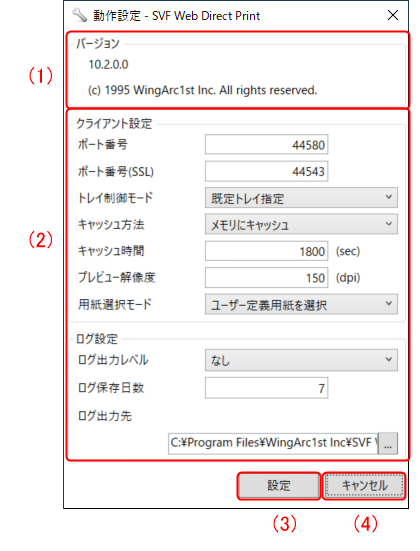
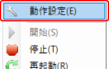
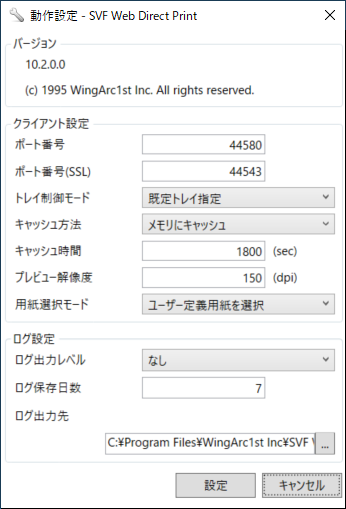

4.2. SDPClientServiceの動作設定
SDPClientServiceの動作設定は、エンドユーザーがクライアントPC上で手動で行います。
JavaScript APIを使用してアプリケーションから動作設定を変更する場合は、「updateConfigFile」を参照してください。
動作設定画面の構成
動作設定画面は以下の領域で構成されています。

番号 | 領域 | 説明 |
|---|---|---|
(1) | バージョン | SVF Web Direct Printのバージョン情報を表示します。 |
(2) | 設定項目 | SDPClientServiceの設定を行います。各設定項目については「設定項目」を参照してください。 |
(3) | ［設定］ボタン | 設定の変更を保存して、動作設定画面を閉じます。 |
(4) | ［キャンセル］ボタン | 設定の変更を破棄して、動作設定画面を閉じます。 |
設定項目
項目 | 説明 | |
|---|---|---|
クライアント設定 | ポート番号 | SDPClientServiceがJavaScript APIと通信するためのポート番号です。「1」から「65535」の範囲で指定します。初期値は「44580」です。 注意変更を反映するには、SDPClientServiceの再起動が必要です。 |
ポート番号(SSL) | アプリケーションがSSL通信の場合に、SDPClientServiceがJavaScript APIとSSL通信するためのポート番号です。「1」から「65535」の範囲で指定します。初期値は「44543」です。 注意
| |
トレイ制御モード | EMFまたはEMFPLUSの印刷データで給紙トレイを指定する場合の、API VrSetTray(n)の指定値とプリンターの給紙トレイを紐付ける方法（トレイ制御モード）を以下から指定します。トレイ制御モードについては「トレイ制御モード」を参照してください。
| |
キャッシュ方法 | プレビュー表示時、プレビューデータを保持する方法を指定します。
| |
キャッシュ時間 | プレビューデータのキャッシュ時間を秒単位で指定します。「0」から「43200」の範囲で指定します。初期値は1800秒です。 | |
プレビュー解像度 | プレビュー画像の解像度をdpi単位で指定します。「1」から「2000」の範囲で指定します。初期値は150dpiです。 | |
用紙選択モード （Ver. 10.2で対応） | 用紙選択モードを選択します。「用紙選択モード」は、用紙サイズが「連帳」か「フリー」の様式ファイルを印刷する場合、または、用紙サイズが連帳、フリー以外で用紙サイズがプリンタードライバーに登録されていない場合、意図した用紙サイズで出力されない現象を防ぐことができるモードです。
| |
ログ設定 | ログ出力レベル | ログを出力するか、する場合はログレベルを以下から指定します。
|
ログ保存日数 | ログファイルの保存日数を「0」から「100」の範囲で指定します。指定した日数を経過したログファイルは自動で削除されます。「0」を指定した場合は、ログファイルは自動で削除されません。初期値は7日です。 | |
ログ出力先 | ログファイルの出力先フォルダーを指定します。Windowsのパスに使用できない長さや文字の入力はできません。指定がない場合、フォルダーが作成できない場合は、SVF Web Direct Printのインストールフォルダーのlogsに出力されます。 ログファイルは指定したフォルダーに以下の名前で作成されます。
ログファイルは日単位でローテーションされます。前日のログファイルには日付が付加され「SDPClientServiceYYYY-MM-DD .log」、「SDPTaskTraYYYY-MM-DD .log」、「SetUpWACertificateYYYY-MM-DD.log」というファイル名に変更されます。 | |
設定手順
タスクトレイのを右クリックします。
表示されるメニューの［動作設定 ］をクリックします。
動作設定画面が起動します。

必要な項目の値を変更します。
各項目の詳細については、「設定項目」を参照してください。

［設定］ボタンをクリックします。
更新を確認するダイアログが表示されます。
参考
ポート番号(SSL)の変更時にはユーザーアカウント制御の画面が表示されますので、「はい」をクリックしてください。
［OK］ボタンをクリックします。
動作設定画面が閉じ、変更が反映されます。